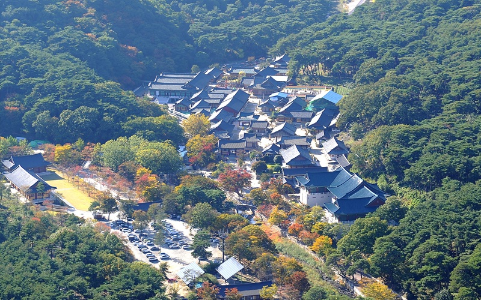
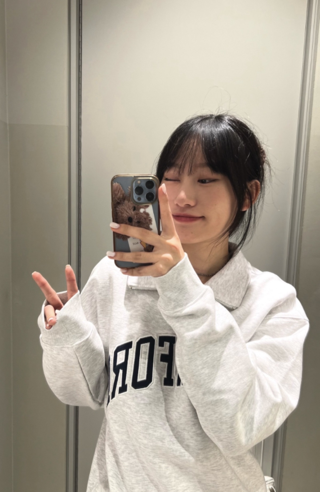
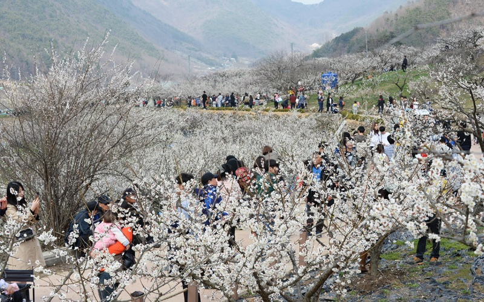
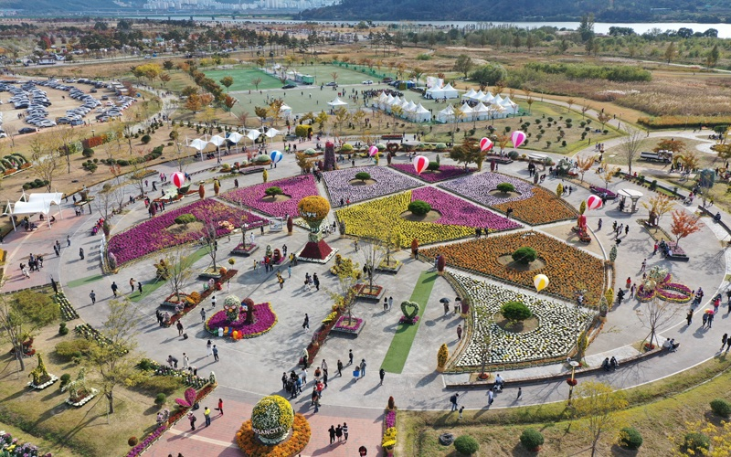
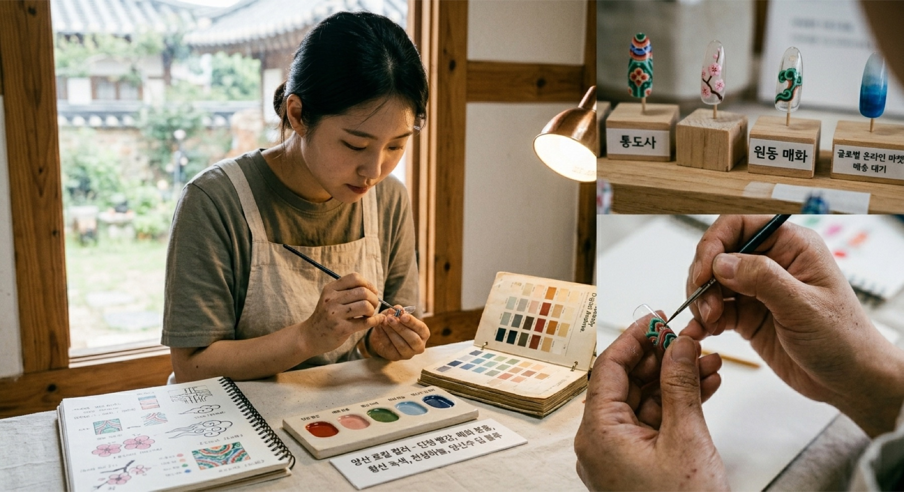
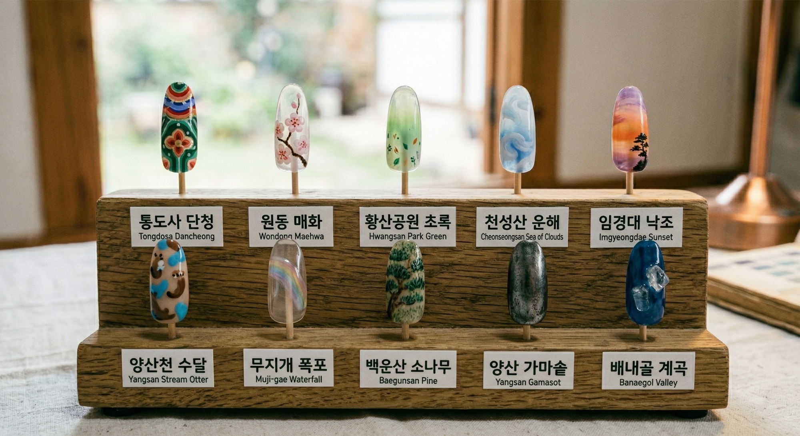

YANGSAN STUDY 01
통도사 단청
청록과 주홍, 금빛 선의 질서를 현대적인 간격과 면으로 풀어보는 디자인 연구.
개발 중 · 스타일 예시YANGSAN / ISSUE 01
지역에서 오래 바라본 색과 이야기를 손끝 크기의 디자인으로 옮기는 일. 가영 로컬 팁은 양산에서 그 첫 장을 준비하고 있습니다.
이 사이트의 제품과 패키지는 브랜드 방향을 설명하기 위한 스타일 예시이며, 현재 판매 중인 완제품이 아닙니다.

시작의 문장
네일을 전공하고 현장에서 고객의 손을 마주해 온 김가영은, 가장 작은 캔버스에도 한 사람과 한 장소의 이야기가 담길 수 있다고 생각했습니다.
유행하는 이미지를 반복하기보다 통도사의 단청, 원동의 매화, 황산공원의 바람처럼 양산에서 만난 장면을 천천히 관찰합니다. 그 인상을 그대로 복제하지 않고 색, 간격, 리듬으로 다시 편집해 착용 가능한 디자인의 가능성을 살핍니다.
“양산에서 발견한 색이 누군가의 일상에 조용히 머물기를.”
첫 디자인 연구
모두 개발 중인 스타일 예시입니다.양산의 실제 풍경을 관찰하되 그대로 복제하지 않고, 색과 간격, 리듬을 네일 디자인 언어로 다시 편집합니다.

YANGSAN STUDY 01
청록과 주홍, 금빛 선의 질서를 현대적인 간격과 면으로 풀어보는 디자인 연구.
개발 중 · 스타일 예시
YANGSAN STUDY 02
옅은 꽃잎과 짙은 가지가 만드는 봄의 대비를 담백한 표면과 포인트로 번역하는 연구.
개발 중 · 스타일 예시
YANGSAN STUDY 03
강변의 수평선과 풀의 움직임에서 편안한 초록의 층위를 찾는 디자인 연구.
개발 중 · 스타일 예시VISUAL CONCEPT / NOT FOR SALE
네일팁, 부착 방식, 지역 이야기를 담은 카드와 패키지 구성을 하나의 스타일 예시로 검토하고 있습니다. 구성, 소재, 가격, 판매 일정은 정해지지 않았습니다.
이 섹션의 이미지는 Gemini로 생성한 시각 콘셉트 예시입니다. 현재 판매 중인 제품이나 완료된 제작·운영의 증거가 아닙니다.


미래 서비스 시각화
AI 생성 콘셉트 필름 · 8초CONCEPT FILM / FUTURE RESEARCH
이 영상은 미래의 맞춤 제작 경험을 탐색하기 위한 AI 생성 시각화입니다. 현재 운영 중인 서비스, 완성된 기술 또는 고객 이용 장면이 아닙니다.
지금의 작업 방식
현재는 지역 리서치와 디자인, 기본 시제품 검토에 집중합니다.
장소의 색, 재료, 계절감과 이야기를 자료로 모읍니다.
손톱의 비율에 맞게 형태와 여백을 재구성합니다.
착용감과 표현을 살피며 디자인을 반복해 다듬습니다.
만드는 사람
KIM GAYOUNG
김가영은 네일을 전공하고 3년 넘게 현장에서 고객을 만나 온 네일 아티스트입니다.
거창한 기술이나 빠른 확장보다 손끝에서 실제로 느껴지는 균형과 만족을 먼저 봅니다. 지역을 존중하는 방식으로 자료를 찾고, 만들고, 반응을 들으며 브랜드의 기준을 세워가고 있습니다.
Gayoung Kim Founder / Nail Artist
가능성을 그리는 순서
컬러 아카이브와 스타일 예시, 기본 시제품을 준비하는 단계입니다.
직접 보고 대화할 수 있는 작은 팝업 또는 쇼룸을 미래 운영안으로 검토합니다.
문화 공간과의 입점·협업 가능성을 장기적으로 탐색하고자 합니다. 확정된 파트너는 없습니다.
해외 배송과 다국어 안내는 수요, 규정, 물류를 확인한 뒤 검토할 미래 계획입니다.
INQUIRY / PROTOTYPE
제품 관심, 향후 팝업·입점·해외 배송 가능성에 관한 의견을 남기는 문의용 화면입니다. 현재 구매나 예약은 받지 않습니다.
아직 수신 서버와 공식 연락처가 연결되지 않아 입력 내용은 저장되거나 전송되지 않습니다.